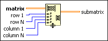

Get Submatrix Function
Owning Palette: Matrix Functions
Requires: Base Development System
Returns a submatrix of matrix starting at (row 1, column 1) and ending at (row N, column N).
To retrieve elements that are not next to each other in matrix, use the Get Matrix Elements function.
The connector pane displays the default data types for this polymorphic function.

 Add to the block diagram Add to the block diagram |
 Find on the palette Find on the palette |